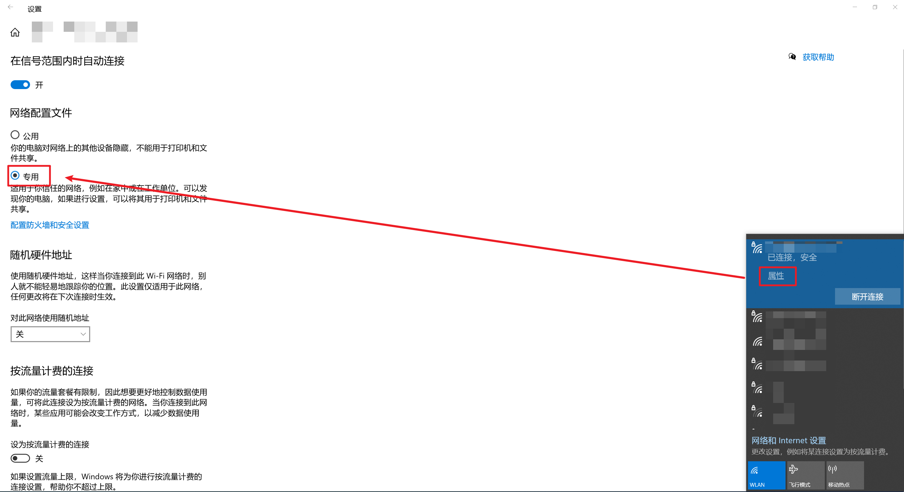
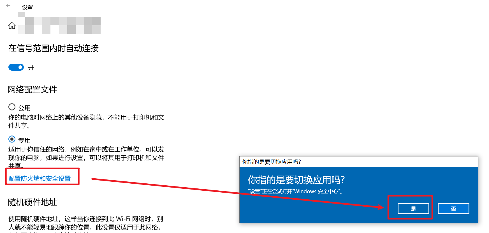
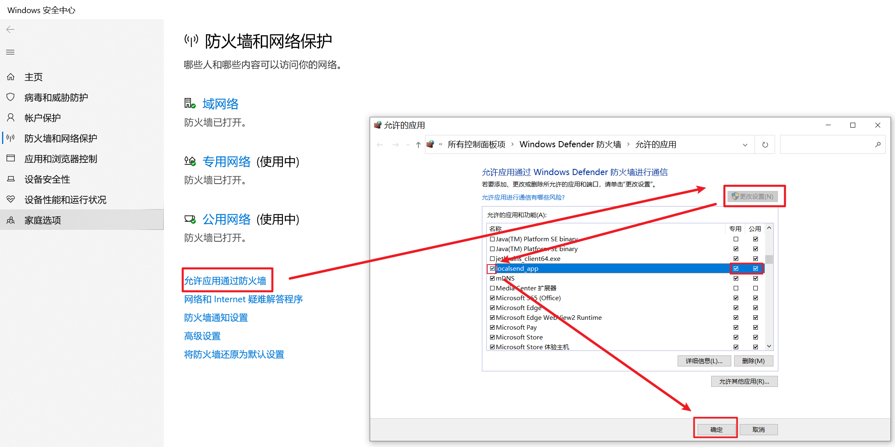
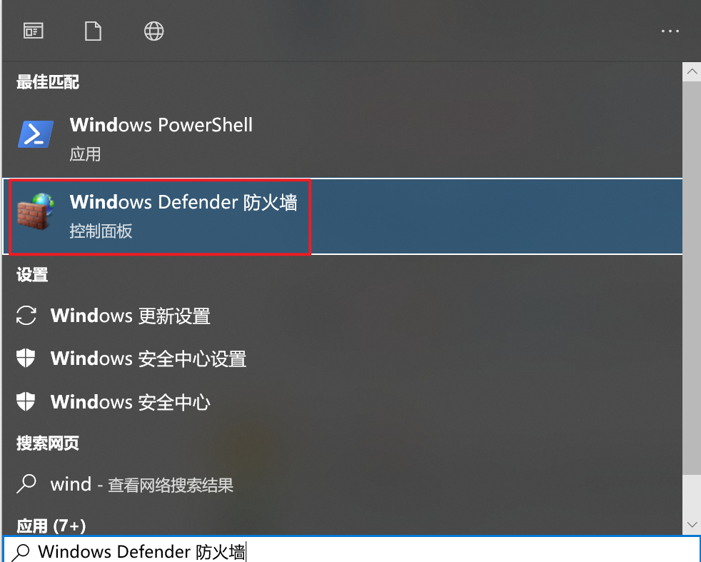
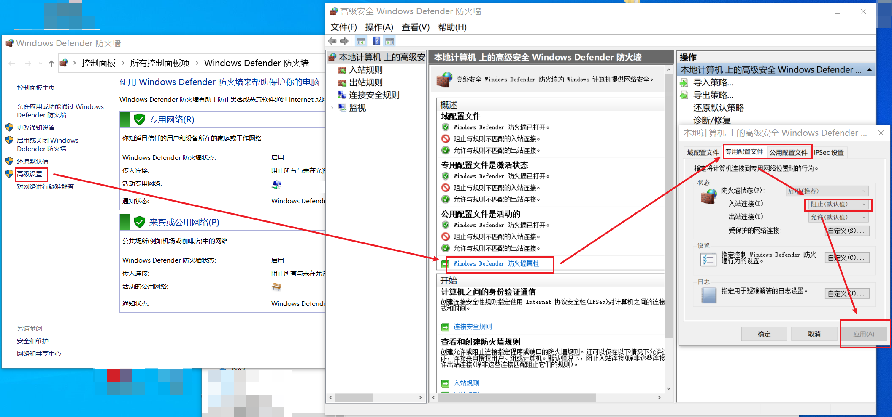
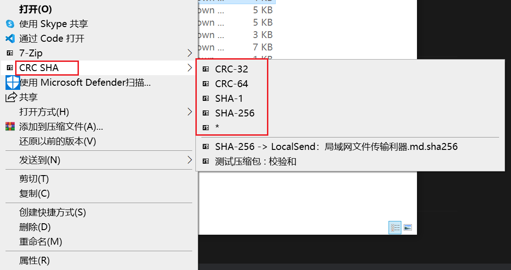
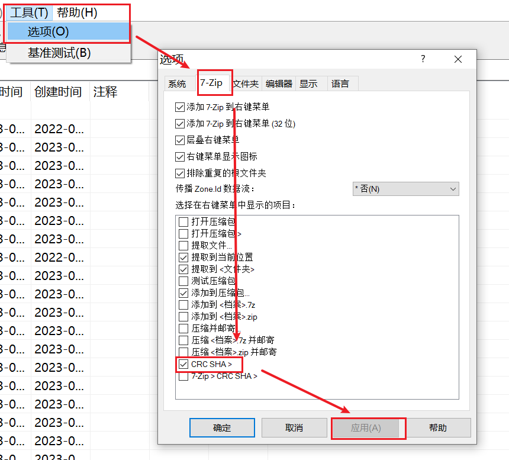

LocalSend：局域网文件传输利器
序言
最近准备重装笔记本的系统，因此要备份文件，存到台式机里。我将要备份的文件夹压缩，通过 Windows 自带的文件夹共享（局域网共享），传输这些压缩包。
但是，传输过程却非常艰难。有的压缩包有 10 几个 GB，传了一分钟，网速就没了，之后就开始报超时之类的错误。更离谱的是，有个压缩包在两台电脑上摘要算法的结果不同。
显然，windows SMB 协议既不能保证速度，也不能保证数据正确性，于是我开始寻找更加好用的局域网传输软件。它，就是本文的主角 —— LocalSend
LocalSend 介绍
LocalSend 是一个跨平台的局域网传输软件，支持 Windows, Linux, macOS, Android 和 IOS. 这是它的官网；这是它的 GitHub 仓库
作者设计了一个基于 HTTP 的传输协议，在这里
LocalSend 基本上是开箱即用，没必要专门写一节 quickstart
但是，由于 Windows 防火墙的默认配置，第一次使用该软件时，同局域网内的设备可能无法发现这台 Windows 设备。下面，我将给出解决方案。
防火墙配置
我的方案
-
将家庭 WIFI 设置为专用网络（不建议在公共网络使用局域网传输文件，无论软件作者做了怎样的加密，我都认为是不安全的。因此，这里不讨论公用网络的情况）
-
进入『配置防火墙和安全设置』

-
『允许应用通过防火墙』——『更改配置』。找到
localsend_app（其他以localsend开头的也可以这样做），将它之前那的单选框选上。以防万一，确保之后的两个单选框也是选上的（应该是默认开启的）。然后点击『确定』
-
重启 LocalSend，等待找到目标主机
网上的方案（未验证）
这里也给出网上其他人的解决方法，虽然我觉得全局操作防火墙很不安全。
-
打开『Windows Defender 防火墙』

-
『高级设置』——『Windows 防火墙属性』。在『专用配置文件』一栏，将『入站连接』改为『允许』，然后『应用』

-
重启 LocalSend，查看能否找到目标主机。如果不行，再将上述『公用配置文件』一栏的『入站连接』改为『允许』，然后『应用』，再次重启 LocalSend 并检验。
文件传输校验
在网络传输文件后，通常要使用摘要算法（MD5、SHA1、SHA256等）对比两份文件是否一致，防止由于网络导致的数据丢失。很多现成的工具提供这样的服务，这里我介绍 3 个。
7-zip
7-zip 虽然是一个开源的压缩软件，但也提供摘要函数。
右键选中要摘要的文件，点击『CRC SHA』，选择摘要算法

如果右键菜单没有该选项，在 7-zip 中配置即可：

openssl
Linux 大多数发行版都会自带的工具。也可以在 git bash 中使用这个命令。语法是：
1 | openssl 摘要算法名 文件路径 |
例子：
1 | Gustav@PC MINGW64 ~/Desktop |
Certutil
Windows 上的一个用来提供证书服务的工具，也提供了一些摘要算法。语法是：
1 | certutil -hashfile 文件路径 摘要算法名 |
例子：
1 | PS C:\Users\Gustav\Desktop> certutil -hashfile .\generate-random-file.cmd sha256 |
总结
在本文中，我介绍了一款开源好用的局域网传输工具 —— LocalSend。之后，我又给出了 Windows 系统中如何配置防火墙，使得其他设备能发现当前的设备。最后，我介绍了一些常见的对文件进行摘要的工具：从网络下载的文件，理论上都要进行一遍校验，防止数据损坏或丢失。